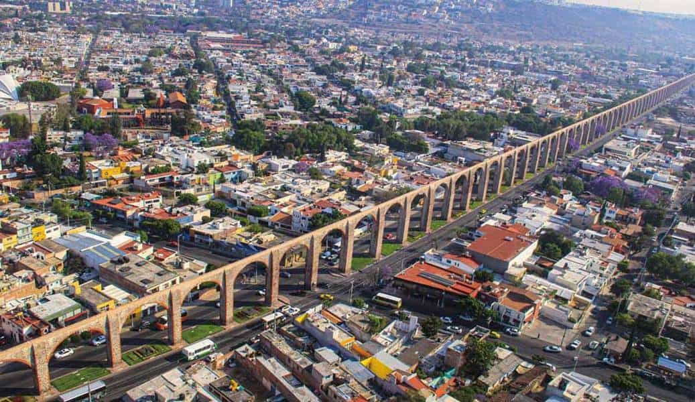

Gestión de cartera Tecnológica
Caso Avimex
Juan David Feo Ovalle
Ingrid Carolina Ariza
¿Quienes son?
Es una empresa mexicana de capital 100% privado, fundada en 1952. Se dedica principalmente a la investigacion, desarrollo, manufactura, importación, exportación y comercialización de productos biológicos, farmacéuticos, para la salud animal, atendiendo necesidades ganaderas
PERSONAL
Cuenta actualmente con más de 270 empleados, dividios en las áreas de MANOFACTURA , CALIDAD , VENTAS y en el área de INVESTIGACIÓN y DESARROLLO .
INGRESOS
Gracias a los esfuerzos conjuntos de todo el personal y la sinerga entre todas las áreas dentro de la compañia se ha logrado colocar a Avimex como el laboratorio con más ventas en el mercado veterinario Mexicano y el septimo entre todos los laboratorios de mexico.
Ubicación
Cuenta con dos laboratorios de investigación en la ciudad de Querétaro y otro en la Ciudad de México
Sistemas de Gestión Tecnológica
Se tienen como objetivo el proteger y mejorar el capital intelectual de la empresa con énfasis en marcas, patentes, desarrollos tecnológicos e invesiones de la empresa, para poder lograr asi productos de mayor valor agregado y dificiles de imitar
Gestión de Cartera de Proyectos
Importancia
Es indispensable para la correcta ejecución de cualquier proyecto, desde la alineación con el horizonte estratégico de la compañia, hasta el seguimiento para lograr llevar al mercado los productos.
¿Cuales son las etapas de la Gestión de la cartera de proyectos?
1.Revisión de proyectos
Inicia en el plan tecnológico, donde se busca determinar la alineación con las estrategias de la empresa y generen el valor propuesto
2.Selección de proyectos tecnológicos
Esta etapa es de suma importacia, ya que se da la revisión de la viabilidad y factibilidad del proyecto, esto revisión suele darse desde la dirección general
3.Aprobación y asignación de recursos
Dependiendo de la etapa anterior se determina la aprobación y asignación de recursos para el desarrollo de este
4.Monitoreo y análisis de proyectos tecnológicos
En esta fase se hace el seguimiento y monitoreo por medio de documentación y revisión de los flujos de caja del proyecto
Resultados
Por medio de todas las etapas anteriores se logra administrar y almacenar toda la información documental asi como dar seguimiento a los flujos de caja del proyecto